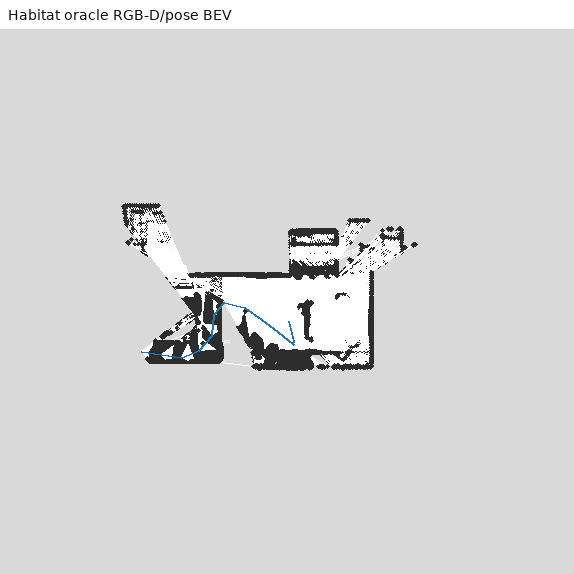
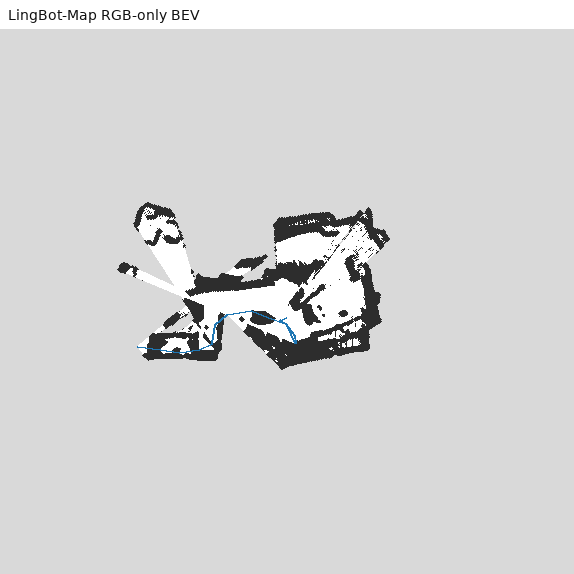
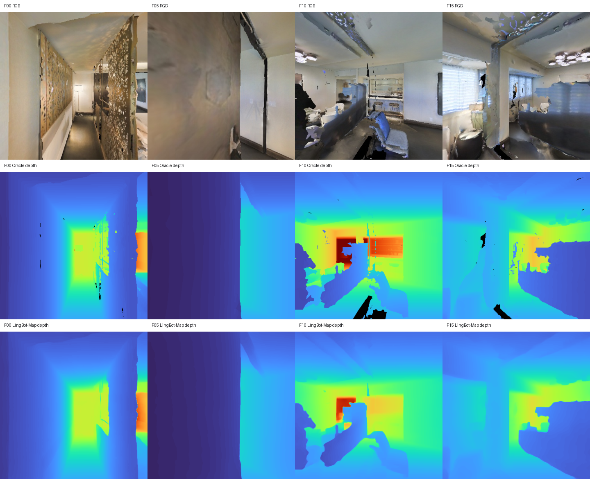

同一 Habitat 连续 16 帧 RGB，均用 Sim(3) 对齐到 Habitat world frame，再进入相同 DenseBEVMapper。 这是几何前端对照，不含 GroundingDINO/SAM 语义误差。
| Method | ATE RMSE m | Explored IoU | Free IoU | Occupied IoU | FPS | Peak VRAM |
|---|---|---|---|---|---|---|
| VGGT-1B baseline | 1.609 | 0.503 | 0.172 | 0.200 | - | - |
| LingBot-Map-long | 0.377 | 0.698 | 0.456 | 0.251 | 5.66 | 9.26 GB |


